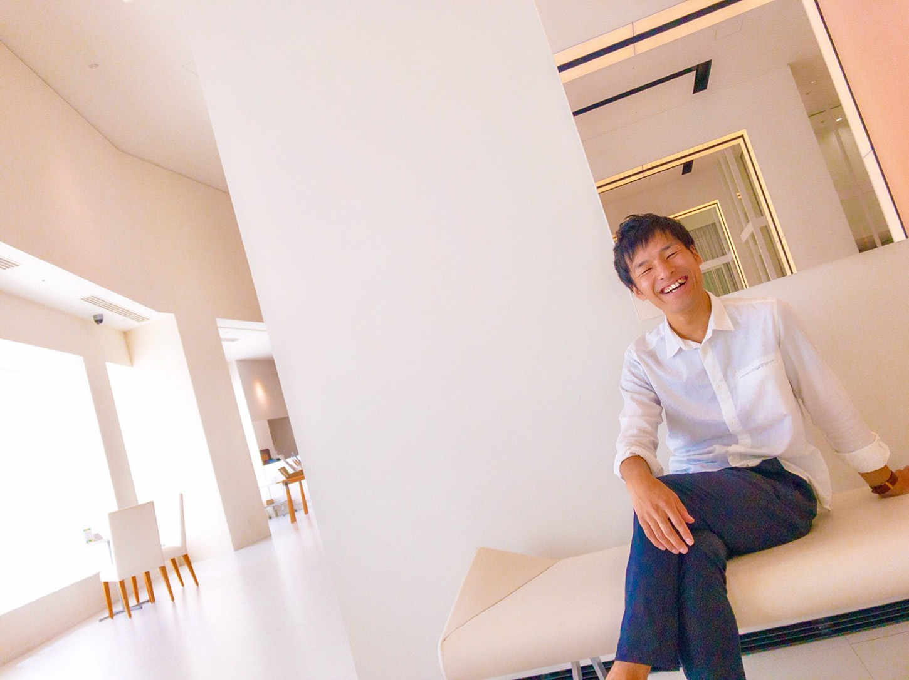
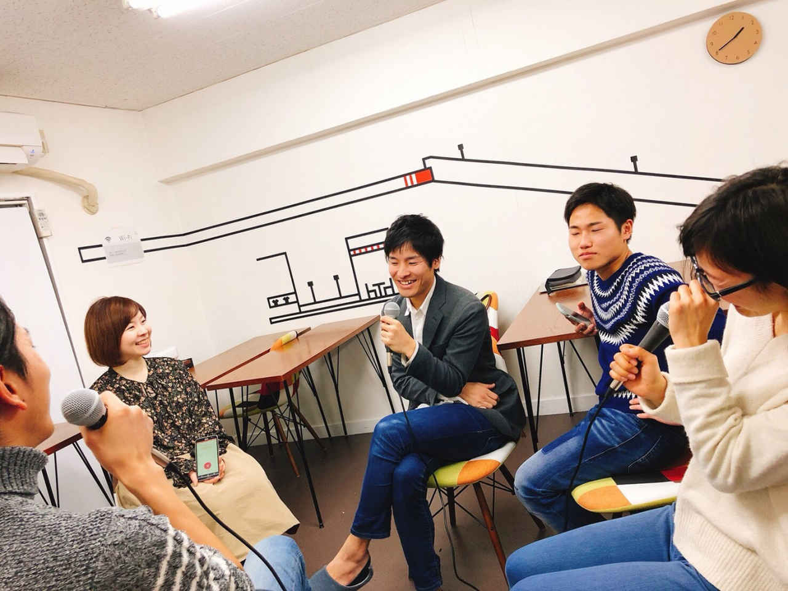
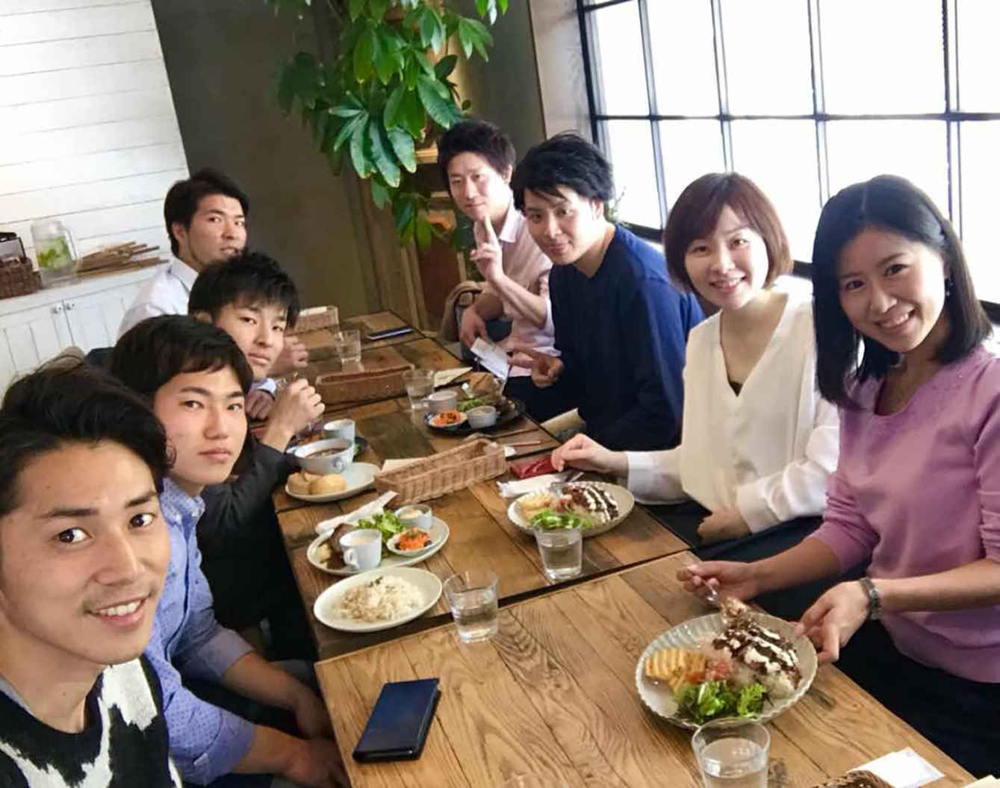
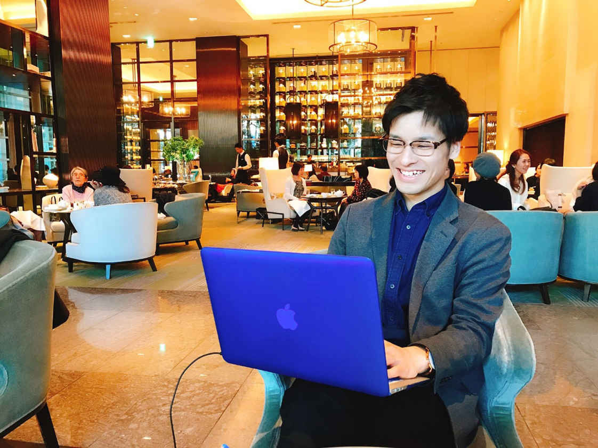
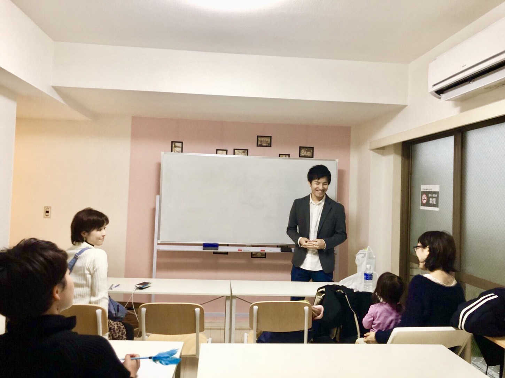

| 黒崎先生！OLでもできる副業の稼ぎ方を教えてください！ | |
| 黒崎ひろき | |
| Eagle Publishing (2018) | |
黒崎ひろき
＠
ひろき「こんにちは！ 黒崎ひろきです。僕は今、オプトインアフィリエイトを教える「ゆとり」というコミュニティの講師をしています。会社員のまま、２０１７年の４月から副業でビジネスを始めて、ビジネス開始から約５ヶ月目で月収30
万円以上になりました。
現在も、僕がオプトインアフィリエイトから得られる収入は、どんどん増え続けています。今回は、副業でこれから副収入を作ってみたいと思っているあなたに向けて、僕のビジネスに対する考え方を紹介させていただきたいと思い、このような本を作る運びとなりました。対談形式で非常に読みやすくなっています。第１章の講義がもし、難しく感じる場合は、第２章からスタートして読んでいただいてもいいような構成となっています。これから、よろしくお願いします！」
＠
ゆき「こんにちは、白木由紀です。私は黒崎先生よりビジネスを教わっている、黒崎先生の教え子です。年齢は私の方が少し上なのですが、もうどう表現していいのかわからないくらい、黒崎先生はビジネスに対する考え方がしっかりしている方なんです。黒崎先生はエンジニア出身なので、頭の回転も非常に早く、ビジネス素人が稼げるようになるまでの道筋を考えることが、とても得意な方なんですね。
この本は、黒崎先生の講義（ビジネスに対する考え方）や、対談を通じて、ビジネスマインド（ビジネスに対する考え方）やオプトインアフィリエイトの魅力が、十分に理解できる構成となっています。本の中で語られているストーリーは、すべて実話をもとに構成されています。
まず第１章は、黒崎先生の講義から始まりますが、第２章から読み始めても、十分に内容が理解できる構成となっています。第２章から読み始めた場合は、最後に、第１章の黒崎先生のビジネス講義を読んでみてくださいね。
それでは、まず最初は、黒崎先生のビジネス講義から始まります。しっかりとビジネスマインド（ビジネスに対する考え方）を、理解するようにしてくださいね」

こんにちは！ 黒崎ひろきです。
「今のあなたの生活にゆとりはありますか？」
「はい、あります！」と答える事ができる方は、なかなかいないんじゃないでしょうか？「既にゆとりがあったら、そもそもこんな本なんか読んでないよ！」と言われそうです。
世の中には、時間はないけどお金がある人、残業だらけの人、お金はあるけど時間がない人、フリーターや、定時で帰れる人など、さまざまな方がいらっしゃいますよね。
時間の自由は、フリーターやニート、無職な状態なら、比較的たっぷりあるかもしれません。しかし、そのような状態では稼げていないので、常に「お金がない」「お金が足りない」という状態に悩まされ続けている事になります。
「ゆとり」ある生活とは、すなわち、お金の自由と時間の自由との、両方を手に入れていなければならないのですが、あなたはまず先に、どちらから手に入れるべきだと思いますか？
お金持ちであろうが、サラリーマンであろうが、１日が24
時間である事は、誰もが変わりません。つまり、時間だけは24
時間、誰もが平等なのです。
一方、お金は誰しも平等ではありません。お金は無限でお金には上限がありません。
お金の自由と時間の自由、両方手に入れる為には、どちらから手に入れるべきかという質問の答えは、ズバリ言うと「まずお金を集めて、それからお金で時間を買う」という順番になります。
どういう事かと言うと、例えば、目的地に行く為に、歩いて行くのか？ タクシーを利用するのか？ タクシーを利用すればお金はかかりますが、目的地に着くまでの時間を短縮する事ができます。それ以外にも例えば、家事をするのに家政婦を雇うなど。家事を家政婦にやってもらうようにすれば、家事をするための時間を自分の時間として自由に使えるようになります。
自由に使えるお金を増やしたいと考える場合、取るべき手段は、支出を減らすか？ 収入を増やすか？ のどちらかになります。支出を減らす為には、無駄遣いを減らして節約する、必要な物を安く買う方法を実行する、節税対策をするなど、私自身、会社員時代、年間30
万ほど節税はできていましたが、それ以上することは難しくこちらも限界があります。
しかし、支出を減らして自由に使えるお金を増やす方法は、いくら考えてもどうしても限界があるので、これから先は、収入を増やす、収入を追い求める方向で考えてみましょう。
会社員が、会社を辞めずに収入を上げる方法は２つしかありません。それは、副業をするか？ 投資をするか？ このどちらかしかありません。
副業をするとは、例えばアルバイトなどがありますが、雇われずに一人で稼いでいくものはビジネスになります。ビジネスとは、すなわち人の悩みを解決することです。
投資をして収入を上げる方法とは、お金を使ってお金を増やしていく方法になります。例えば、ＦＸや株、不動産などが、代表的なものですね。
「黒崎先生、ちょっと待ってください！ 不動産投資するお金なんか、もし今現在持っていたら、今頃こんな本なんか読んでいませんよ！」と言われてしまうかもしれませんので、ここから先は、副業ビジネスで収入を上げる方法について、ある程度、的を絞ってお話ししていきますね。
ここでしっかりとあなたに理解してほしい事があります。それは、僕から伝えられるノウハウが「単なる副業での小銭稼ぎ」だけではないという事です。支出を抑えて節約する方法や投資でお金を増やしていく方法まで、最終的には道筋を立ててしっかりと説明する事ができますので、あなたにはここで脱落せずに、最後の最後まで僕の話についてきてほしいのです。
それが、この本で僕からあなたに伝えたい事に最終的につながりますので......。
心の準備はいいですか？
それでは、話を続けて参りましょう！
副業で稼ぐとは、「自分自身のビジネスを持つ事」。ビジネスとは、すなわち「他人の悩みを解決する事」という話をしました。
タクシーは、目的地まで歩いて行きたくない、行き方がそもそもわからない時に、お金でその悩みを解決するサービスです。普通の人が、めんどくさいと思うような事を、代わりにやってあげて解決する。これでビジネス成立です。
子供が、学校の授業だけでは勉強が追いつかないという悩みを解決したい場合には、学習塾というビジネスがありました。このように考えると、世の中で、お金持ちと呼ばれている人たちは例外なく、人の悩みを解決している人たちなのです。
もしあなたが、これからお金持ちになりたいと考えているのであれば、あなた自身がこれから「人の悩みを解決する人」になる必要があります。
では、時間とお金の両方を手に入れられる副業なんて、果たして本当にあるのでしょうか？
結論から先に言うと「あります！」。
この本では、その方法について更に詳しくお伝えしていくので、これから先も集中してしっかりと読み進めるようにしていってください。
読書好きな方なら、これまでにも聞いた事があるかもしれませんが、ホリエモン、こと堀江貴文氏が提唱する「儲かるビジネス」の４原則というのがあります。
①
少ない初期投資で始められる（小資本で始められる）
あなたがもし「ラーメン屋」を開業して、ビジネスで一攫千金を狙う事を考えるとしましょう。そうすると、まず土地を買い、店舗を建て、調理用の器具を導入し、客席や内装にもお金をかける事になりますが、これでは莫大な費用がかかるので、ほとんどの場合借金をして始める事になります。
うまくいけばいいのですが、もし失敗した場合は借金だけが残る事になります。これに対して、インターネットでビジネスを始める場合は、ほとんど初期投資がかかりません。この本では、お金がなくても副業で収入を上げていく為の方法として、インターネットビジネスで稼ぐ手法を、これからご紹介していきます。
②
利益率が高い
数あるインターネットビジネスの中でも「アフィリエイト」と呼ばれるビジネスモデルは、始めるにあたって、初期費用がほとんどかかりません（全くかからない訳ではない）。また、経費もシステムの使用料やツールの使用料がほとんどなので、利益率はそれ以外のビジネスと比較した場合でも、十分に高いと言えます。
③
在庫を持たない（在庫が少ない）
インターネットビジネスの場合、「転売」では多少の在庫を持つ場合がありますが、「アフィリエイト」の場合は、在庫は全く持ちません。その為、リスクが非常に少ないと言えます。
④
継続的に稼いでいける（長期的に安定した収入が見込める）
お客様に会員になってもらい、毎月会費を支払ってもらうビジネスモデルは、長期的に安定した継続収入が見込めます。仕組みが完成するまでに少し時間がかかりますが、いったん仕組みが完成してしまうと、「アフィリエイト」は少ない作業時間で長期的に安定した継続収入を、あなたにもたらしていく事になります。この本では、これからあなたに「オプトインアフィリエイト」で稼ぐ方法を、お勧めしていきます。
しかし、副業に興味のあるあなたなら、この本にたどり着く前にどこかで、「アフィリエイトでは、95
％
の人が月に５千円以下しか稼げない」という噂話を聞いた事があるかもしれません。
確かに、その情報が完全に間違いであると、ここでは否定しません。しかし、「オプトインアフィリエイト」で月に５千円以上稼ぐ事は、僕にだって余裕でできています。逆に言えば、稼いでいる５％
の中に入る事さえできれば、想像以上に簡単に稼ぐ事だってできるのです。
つまり、あなたが稼げるようになれるかどうかは、あなたが稼げる人たちの輪の中に入れるかどうかによって決まる、と言っても過言ではありません。
この本の第４章では、稼げない人たちが稼げるようにならない理由を徹底的に排除した、僕自身も所属している〝あるコミュニティ〟の存在をご紹介させていただきますので、これから先も楽しみながら読み進めていってくださいね！
あなたは、副業で月収30
万円以上稼ぐ事は、可能だと思いますか？
「はい、十分に可能ですよ」。これが僕の答えです。
これから副業で稼いでいくにあたって、学歴や資格やプライドは一切必要ありません。インターネットビジネスでは、全く学歴がなくても稼いでいる人はたくさんいますし、資格自体は就職する為に必要な物なので、資格を持っている事と稼ぐ事は一切関係ありません。むしろ、中途半端に難しい資格を取得していると、変なプライドが邪魔してしまう可能性さえあります。
実際に副業で稼いでいくために是非、あなたにやっていただきたい〝ワーク〟があります。
まず１枚の紙を用意してください。そして、左上に「現実」、右上に「理想」と書き、真ん中に１本の線を引いてください。
あなたの年収が、もし現在５００万円なら、左側に「年収５００万円」と書き、右側には「年収１０００万円以上」と書いてください（記入する金額は、あなたの実情に合わせて下さい）。
左側に、あなたが住んでいる街を書いたら、右側には「海外を旅しながら稼ぐ」と書き、左側に「欲しい物が買えない」と書いたら、右側には「欲しい物が買える」と書きましょう。
これらは１つの例にすぎませんが、この要領であなたの現実と理想を、どんどん書き出していってください。
左側に「副業での収入０円」と書いたら、右側には「副業で月収30
万円」と書いてみましょう。ほとんどの項目が、左と右で大きくかけ離れているのではないでしょうか？
ならば、ここで、１つ１つ、左から右へ行くのに乗り越える為の手段はあるのかどうか？ を考えていってみてください。
副業を進めていく上で、この妄想を繰り返すという習慣は、とても大切な習慣になります。なぜなら、副業をすすめていく上でのやる気は、下がっていってしまう場合がよくあるからです。
もし、やる気が下がってしまった場合には、プラスの妄想だけではなく、マイナスの妄想も時には考えてみるようにしましょう。マイナスの妄想を考えた方が、時には、やる気の上がる場合もあります。
例えば「会社の給与が下がってしまったので、妻から愛想をつかされて離婚になる事だけは避けたい！」「あと毎月３万円プラスで稼げるようにならなければ、ローンの返済ができなくなってしまう」などの不快な状況を避ける為に、努力しなければならないという状況の方が、人は強く頑張れるものなのです。
「できれば毎月あと３万円プラスで稼げればいいなぁ」という軽い願望レベルで副業をするのと、「絶対に副業で毎月３万円稼がなければ、これから生活する事ができない」という追い込まれた状況で副業をするのとでは、副業を進めていく上での実行力・行動力が全く違うのです。
副業で月収30
万円稼ぐ方法には、複数の方法があります。僕自身、副業で月収30
万円稼ぐ事はできましたが、他にも副業で月収30
万円稼げたメンバーが、僕の周りにはたくさんいます。
僕は、これからあなたに、その環境の輪の中に飛び込んできてほしいと願っています。あなたにとってのスタートライン、それは副業で月収30
万円以上、絶対に稼いでやると心の中で強く強く念じる事、理想の生活を妄想する事、それがまず今のあなたにとっての最初の第一歩となるのです。
さて、あなたにはこれから副業で稼ぐ事を強くお勧めしている訳ですが、実際のところ90
％
以上の人が、副業で稼げていません。それは、なぜなのでしょうか？
ここでは、その理由について考えてみたいと思います。
僕自身、これまでたくさんの、これから副業で稼ぎたいと思っている人達とお話ししてきましたが、その中での実感として、まず50
％
ぐらいの人達は、最初は無料で得た情報を元にビジネスを始めようとします。そして、だいたい半年から１年ぐらいはずっと、無料の情報のままビジネスを続けようとするのです。
しかし、これで稼げるようになるのなら、大学や塾、スクールはすべていらなくなってしまいます。たとえ副業とはいえ、ビジネスを始めるという事は、自分自身がスモールビジネスのオーナーになるという事であり、事業家になるという事です。
事業として収入を得る事の本質とは、まず先になんらかの投資をして、その結果得られた物についての対価を得るという事です。僕自身も、一番最初の１ヶ月目だけは無料で稼ごうとしましたが、その状態は１ヶ月で卒業しました。
次に稼げないのは「情報商材」や「ノウハウ」を購入して、たった１人で実行しようとする方です。これらの価格はピンキリで、安い物なら１万円、高い物なら１００万円から最高で３００万円ぐらいまで様々な物がありますが、だいたい１万円～10
万円ぐらいの範囲の商材を買っている方が一番多いのです。
しかし、１万円の商材など、買ったとしても実際には稼げません。これは参考書１冊で英語を話せるようになるのと同じくらい難しく、圧倒的に情報不足です。
安いノウハウほど、肝心な情報には全く触れていないので、成果がでるまでにかかる時間がとても長くかかります。全く稼げない状態がそんなに長期間続いても、その間あなたはずっと、我慢し続ける事ができるでしょうか？
もし「情報商材」や「ノウハウ」を買って稼ぎたいのであれば、目安としては30
万円から１００万円ぐらいの物を買うのが、オススメです。30
万円ぐらいの塾やオンライン講座、ツールなどから、価格が１００万円ぐらいの物になれば、個人コンサルまで付いている物がほとんどだと思います。
よく、このようなノウハウを買っても稼げるようにならなくて、詐欺だ、詐欺だと騒ぎ出す人がいるのですが、もしも本当に詐欺だとしても、人からお金をもらって騙せるレベルにまで達する事の方が、よほど難易度が高いのです。
実際に販売されている商品の中に、１００％
完全にデタラメな商材などほとんどありません。本当にごく少数の人だけが、そのノウハウを使って実際に稼げるようになる事も事実ではあるのですが......
しかし、そのノウハウの再現性の低さが問題なのであって、壁にぶち当たったときに誰も助けてくれないことこそが問題なのです。ですから「ノウハウ」だけを買うのは、非常に失敗する可能性が高く、僕は一切、１人で進めていく副業はオススメしません。
だったら、どうすればいいの？ という事になりますが、答えは「その業界でうまくいっている人を、あなた自身が見つける」という事になります。副業で実際に稼げるようになる手順は、以下のようになります。
１、その業界でうまくいっている人を見つける
ファッションでもスポーツでも人は気付けば、自分の気にいっている人、好感を持てる人を探し出し選びだし、そして、その人の真似をしているはずです。ここで注意したいのが、その業界でうまくいっているからといって、その人が自分に合うかどうか？ は、まったく別の話というところです。
例えばファッション業界で、ドン小西さんなどは非常に有名ですが、あなたが同じファッションを真似て、それで似合うかどうか？ といえば別の話です。重要なのは、うまくいっているという事実、かつ、自分との相性で人を選ぶことです。
２、ファッションに限らず、うまくいっている人、稼いでいる人、１流のスポーツ選手などその環境が存在している環境の中に飛び込む。
３、選んだ環境の中で、うまくいっている人をモデリングする（真似をする）
現実的には、イメージが湧かない結果、行動ができないという方がほとんどなのです。
ここまでの結論として言える事は、「自己流」でビジネスを始めてしまう事が、一番ダメだという事です。まず初めに稼いでいる人の真似をし、その真似ができるようになってから、自己流を少しだけ加えるのです。これは、完全な自己流に変えてしまうという事ではありません。あくまでも、ベースには稼いでいる人のやり方があります。
実際に誰をモデリングするかはあなたの自由ですが、稼げるようになった人には必ず、稼げるようになった元となるビジネスの師匠が、必ずいらっしゃるのです。自分１人だけの力で稼げるようになった人は、１人もいません。１人で始める副業は、必ず失敗するのです。あなたが副業を始める際には、くれぐれも１人では始めないようにしていただきたいと思います。
副業で実際に稼げるようになる人と、いつまでたっても稼げるようにならない人。いったいどこに、その差があるのでしょうか？
稼いでいる人の特徴を、たった一言で短くまとめると、
①
バカである
②
頭がいい
......のどちらかになります。もちろん、①
の要素も②
の要素も両方持ち合わせていれば、更に稼げるという事になります。この話を聞いてあなたは、「バカ」で「頭がいい」っていったいどういう事なの？ 正反対なのでは？ と疑問に思われるかもしれませんよね。ここでは、これからその理由を具体的に説明させていただく事とします。
まず、①
「バカである」とは、いったいどういう意味なのかと言うと、何も考えずに突き進んでいける人、すぐに行動できる人、スピード感のある人、すぐに動ける行動派である人が「バカである」という事なのです。すなわち、師匠から言われた事を、素直に、バカ正直に、今すぐ実行に移せる人という事になります。
世の中には、アルファベットの順番が......正確に言えないような人でも、稼げるようになっている人がいます。常識的に考えると、そんなんじゃ稼げるはずがない......というような人が、抜群の行動力があるから稼げている......という場合が、実際にはよくある事なのです。
次に、②
「頭がいい」とは、いったいどういう意味なのかと言うと、今すぐやるべき事を全体を見た上で判断し、前に進んでいける人......という事になります。すなわち、良い選択のできる人、考えて選択のできる人、正しい決断のできる人という事です。
考えた事は、できるだけ早く実行に移す。そして、やりながらその都度、軌道修正する。今すぐやる。今すぐ行動する。50
％
の確信しかなくても、とりあえずやってみる。実際に稼ぎを増やしていく為には、とにかく行動する事が大切です。
稼ぐ事ができない人とは、慎重派で何も動けない人、これまで稼げなかったその延長線上で無駄に考えてしまう人、考えた結果それがマイナスに効いてしまう人。
結果がでない人というのはズバリ、自己流の考えを捨てきれず無駄な事ばかり考えてしまい、あまりにも慎重すぎて、その結果行動する事ができない人達の事を言うのです。
では、バカでも頭がいいわけでもない普通の方の場合は、どのように行動していったらいいの？ っていう話になりますが、この本を読めば、結果が出る思考はわかると思うので、その思考に近づけていくだけでいいのです。

裕福でない家庭で育った僕は、両親から「自分の欲しい物は、自分で稼いで買いなさい」という教育を、高校生の時からずっと受け続けていました。その影響で、高校時代から大学時代にかけては、僕は結果的にアルバイトばかりし続ける事になりました。
しかしそのおかげで僕は、小学生時代からずっとコンプレックスを感じていた、自分自身の本当に嫌だった性格を、大学時代には完全に変える事に成功したのです。この章では、僕の小学生時代にまでさかのぼり、どのようにして僕の人生が変わっていったのか？ その変遷について、一度振り返ってみたいと思います。
この章では、僕の教え子である白木由紀さんとの対談形式で、僕自身の過去を振り返ってみる事とするので、ここから先は、２人の対談を聞いている感じで読み進めていってくださいね！
それでは、僕黒崎と、その教え子由紀との対談の始まりです。
＠
ゆき「こんにちは。私は東京に住んでいて、現在は品川にある会社に勤めている、28
歳のＯＬ〝ゆき〟です！ 私は黒崎先生から、オプトインアフィリエイトという副業の稼ぎ方について、現在指導を受けている最中の、黒崎先生の教え子です。本日は対談という事で、黒崎先生にいろいろ質問していきたいと思います！ 先生、本日はよろしくお願いします！」
＠
ひろき「はい、ゆきさん、よろしくお願いします！」
＠
ゆき「さっそくですが、先生は小学生時代は、どんな小学生だったのですか？」
＠
ひろき「僕は小学生時代はめっちゃ引っ込み思案で、正義感は強いけど、消極的でビビリでした。お店に行っても、恥ずかしくて店員さんに声をかける事さえできないような子供でした」
＠
ゆき「先生、今はそんなイメージはないですね！ 今の先生からは、考えられませんね！ とてもおとなしい子供だったんですか？」
＠
ひろき「はい、とてもおとなしい子供でした。ですが、３歳から水泳、小学生から習字・そろばんと、多くの習い事をしていました。中でも水泳は、ジュニアオリンピックに行きかけるまで上達したのですが、あまりにも練習が過酷すぎて辞めてしまいました。当時はムキムキな小学生だったんです」
＠
ゆき「なんか、あるあるなお話ですね！ 小学生からムキムキってやばいですね！」
＠
ひろき「そんな水泳も練習がきつすぎたのと、野球がしたいことを理由に辞めてしまいました。今でもですが、飽き性なんです。小４で野球以外は全部辞めました」
＠
ゆき「そうだったんですね。でも野球も、すごく過酷なイメージがあります」
＠
ひろき「そうですね。それでも球技は楽しかったです。個人技と違い、チームプレーで勝ち負けを競うところに楽しさを感じていました。でも本番、つまり試合では結果が出せるタイプではありませんでした。何より、バッターボックスに入ると緊張。また打てなかったら怒られるんじゃないかと怯えながら試合をしていました。プレッシャーに極端に弱かったんです。さらに周りの環境に流され、少しやんちゃなこともして、ダメダメでしたね」
＠
ゆき「そうなんですね」
＠
ひろき「そんな中、中学では周りが極端に頭が悪かったのと、責任感の強さだけでキャプテンになってしまいました」
＠
ゆき「さすが先生！ めっちゃかっこいいじゃないですか？ モテますよね？」
＠
ひろき「野球部キャプテンは名前だけモテますね（笑）。とか言ってる場合ではなくて、周りがやんちゃすぎて、チームをまとめるのに必死でした」
＠
ゆき「野球部やサッカー部ってやんちゃなイメージがありますよね？」
＠
ひろき「はい、ただ、よくあるバカやってるという感じでの楽しさはありましたね。でも、ずっとそれでもチームをまとめ続けたとか、いい方向に導けたとか、そういった形での成功体験や、指導とかでうまくいったってことは、残念ながらありませんでした」
＠
ゆき「かなり大変だったということですね。でも、私はそこまでの大変な経験はしたことがないので、そのような経験をされているだけでも尊敬してしまいます。高校時代はどうだったんですか？」
＠
ひろき「サッカーに憧れていたので、高校から部活をサッカー部に変えました。サッカーがめっちゃやりたくなったんです。サッカーとアルバイトの日々でした」
＠
ゆき「楽しかったですか？」
＠
ひろき「毎日リフティングの練習をしていました。学校が終わると真っ先に、誰よりも早くグラウンドに出て、初心者という壁を早く抜けるために一番うまい先輩に毎日教えてもらいました。この時から、学ぶなら一番うまい人。そして、その人を超えるつもりでやろうと思うようになりました。で、サッカーが終わったら、すかさずアルバイトの繰り返しでした」
＠
ゆき「アルバイトは何をやったんですか？」
＠
ひろき「飲食店を転々としました。いろんな店舗の裏側を知りたかったんです。料理の作り方や店舗の営業の仕方なども含めてですがね」
＠
ゆき「いろいろやった感じだったんですね」
＠
ひろき「すべてかけもちで、１年以上続けました。楽しかったですね」
＠
ゆき「なんで？ そんなに働いたんですか？」
＠
ひろき「部活の備品や、自分の服を買うためですね。必要なものは、自分で働いて買いなさいという教育だったので、働くしか選択肢がなかったんです」
＠
ゆき「高校でそれって厳しいですね。自分で買いなさい、というのは。でもだからこそ、先生は高校時代からタフになれたんですね」
＠
ひろき「そうかもしれません。そのおかげでいろんな経験ができました」
＠
ゆき「次は、大学ですね」
＠
ひろき「金銭的に国立に行くしかなかったので、高校最後は朝から晩まで毎日必死に勉強しました。高校のレベルが低くて受験のレベルに追いついてなくて、それでも独学で頑張って、わからなかったら学校の先生に聞いて教えてもらうという感じで、めっちゃやりました。受かるところに合わせた勉強量で頑張りました」
＠
ゆき「そこまで頑張ると、社会人になってからも役立ちますよね」
＠
ひろき「私立に行けなかったので、やるしかなかったんですよね。でも、国立に入ってやった事は、大学時代もずっとアルバイトでした」
＠
ゆき「何のアルバイトをしたんですか？」
＠
ひろき「また飲食店です。料理を作れるようになるためにキッチンに入り、内気な性格を治すためにウェイターをしたりと色々しました。この時点でネットビジネスをしておきたかったですね」
＠
ゆき「何がきっかけで変わったんですかね？ 小学生の時はヘタレだった訳じゃないですか」
＠
ひろき「中学時代に野球部のキャプテンをやっても、まだ引っ込み思案は治らなくて。高校時代は、サッカーばかりしてて、それでも大きくは変わらなかったのですが、大学時代には、どうしてもコミュニケーションを取らざるをえなかったので、ここで一気に自分の性格を変えるよう努力したんです。そうしているうちに、気づいた時にはいつの間にか、性格が変わっていました」
＠
ゆき「大学って本当に、いろんな所からいろんな人が来ますよね」
＠
ひろき「アルバイトばっかりしてると、いろんな人と話せるじゃないですか。焼肉屋の時にはホールをやりました。接客技術を磨きたかったんですね」
＠
ゆき「やってみてどうでしたか？」
＠
ひろき「今までの飲食店の経験から最後のアルバイトの店舗ではリーダーをさせていただくことになりました。そこで人とのやり取り、人に教えることの楽しさを覚え、消極性は完全になくなっていました」
＠
ゆき「小学生時代の先生からは、想像できないほどの変わりようですね。人は、変わろうと心の底から願えば、変われるっていう事ですよね」
＠
ひろき「間違いないですね」
【結論】人は変わらざるをえない環境に追い込まれ、自ら変わろうと努力すれば、変われる。
＠
ゆき「黒崎先生は何がきっかけで、ビジネスを始められたのですか？」
＠
ひろき「大学時代は、就活をして大企業に入りさえすれば、それで勝ち組になれると強く信じていました。僕には奨学金という借金があって、かつ、両親の共働きを辞めさせたいという願望もあって、それらは、大企業に入りさえすれば望みは叶うはずだと大学時代は考えていたのですが......。いざ、大企業に入ってみると、それらの願望は大企業に入っただけでは全く叶わないものだという事がわかりました。あと、自分は海外にも行きたいと思っていたので、海外にも行ける大企業に行きたいと思っていたのですが、現実には、なかなか海外には行ける会社ではありませんでした」
＠
ゆき「それは、海外に行くには、行ける枠があるっていう事ですか？」
＠
ひろき「そうではなくて、最初に海外赴任するところから始まり、現地で社員として成長していけば良いような会社だったら、すぐに行けるかもしれないですよね。しかし、僕のいた会社は、現地に着いたらすぐに即戦力として働かなければならない会社だったのです。いざ海外に行ってしまうと、もうそこは戦場で荒れた土地を耕すのが仕事、１日20
時間ぐらい働いて当たり前、１週間休みなしなんていうのが普通にある会社だという事が分かった訳です。そんな会社だと、実際に行けるのは何歳になったらなのかも分からないし、もし行けたとしても、行ったらもうそこは地獄だという事がはっきりしました。海外赴任した社員は、５年、10
年と日本には帰ってこれなくなってしまう会社だったんです」
＠
ゆき「え～、そうなんですか？」
＠
ひろき「それに加えて、大企業でも給料はほとんど上がらない事がわかりました。上がってるじゃないですか？ と言われるかもしれないのですが、１年間で月給が１万円上がるぐらいなんですね。結局、残業して稼ぐ！ みたいな世界なんです」
＠
ゆき「あるあるですね！」
＠
ひろき「でもそれって、本当は早く帰らないといけないはずなのに、残業して稼ぐなんておかしい世界ですよね！ 日本企業だと基本給なんてほとんど上がらないし、そうなってくると、いつになったら奨学金が返せるようになるんだろう？ っていう不安が出てきてしまって。それに、いつ会社が潰れるのかもわからないし」
＠
ゆき「確かに、もう安定なんてないですよね」
＠
ひろき「スキルが付いていく感じがしないし、同じ仕事しかできないので、それがきっかけで副業を探し始めました。最初は、まずは支出を抑えようと思って、節税、投資信託、株などを調べました。しかし、支出を抑えるのは限界がある為、結局、もう収入を増やすなら副業を探すしかないという結論になって、ネットや本を探し始める事になりました。その結果、転売で月10
万円稼げますというノウハウを、ネットで見つけたんです。それがきっかけになって、早速、そのノウハウを教えてもらいながら始める事にしました。実際にまだ顔を見た事もない人に何十万円も払って」
＠
ゆき「自己投資したんですね」
＠
ひろき「奨学金を返済しながら給与収入をもらい続けるよりも、数十万円で自分で稼ぐ力がつくのなら、そっちの方が安いと、何もわからずに即決できました。バカでよかったと思っています。自分がやりたい事をやる為に始めました。不安要素と、このままで大丈夫かな？ という気持ちがあって。あと、エンジニアをやっていると、ロボットがどれぐらい進化したのか？ っていうのが分かって、将来ロボットに出来る仕事がわかるんです」
＠
ゆき「ロボットが増えると、将来なくなる仕事もありますよね」
＠
ひろき「僕らはロボットを使う側なので、僕らの仕事がなくなる事はなく、技術があれば生き残れるとは思うんですけど。ロボットを動かす為のロボットはまだ作らないと思うので。でも、最近のセルフレジの進化のスピードとかはとても早くて、僕「ＧＵ」に行ったんですけど、買った服をカゴに入れてぐちゃぐちゃのままレジに通しても、それで買い物合計の値段が「ピッ！」って出ちゃうんですよ。システム系がわかっている僕でも、その仕組みはすごいなと感じたんですね」
＠
ゆき「それは凄い進化してますね！」
＠
ひろき「凄いっすよ。だから、レジに人がいなかったですし、事務なんて、どんどん無くなっていくでしょうし。しかも、僕らの老後は、年金が無くなってるでしょうから」
＠
ゆき「誰でもできる仕事は、どんどん無くなっていくでしょうね」
＠
ひろき「最近はなんでもネットか、ロボットじゃないですか？ 保険も買い物もネットの方が安かったり、結局人が介入するところにお金が発生してしまうので。それを考えると、やっぱりネットだなって思って探し始めたんですよ」
＠
ゆき「ネットだと、リアルに比べてビジネスを始めやすいんですか？」
＠
ひろき「そうですね。今は副業から始めても起業までいけますからね。最初は知らなくて、やってから気がついたんですけど。昔だったら、ラーメン屋を開くんだったら、まずコンサルを受けるだけで何百万円で、それから店舗を建てて土地代払って、什器や食器や在庫を抱えて従業員雇って、普通に１０００万円ぐらい借りたりするじゃないですか。そもそも、ローンを使ってマイナスからスタートして、失敗したら借金だけが残る。店舗型は、超過酷な世界が起業だったはずなのですが、今やネットビジネスでは、学べば起業ができますから」
＠
ゆき「自分がやる覚悟さえあれば、確かに起業ができますね」
＠
ひろき「そうですね。時代は変わり続けていますね。今回はここまでにしましょう」
【結論】ネットを活用した副業なら、軌道に乗るとそのまま簡単に起業できる時代に変わった。
＠
ゆき「今回は黒崎先生に、なぜ稼げるようになったのか？ という秘訣を伺いたいです」
＠
ひろき「一番最初の始まりは、２年前にネットワークビジネスの話（ア●ウェイ）を聞いた事でした。友達に誘われてバーベキューに行ったら、それが、みんなア●ウェイをしてる人達の集まりでした。若干宗教観を感じたのですが、その時は知識が何もなく、よくわからないまま終わりました。終わってから自分で数字を調べて、これで稼ぐのは難しそうだぞと感じたので、その話に乗るのは辞める事にしました」
＠
ゆき「一番最初は、ネットワークビジネスだったんですね。その後、どうなったんですか？」
＠
ひろき「とにかく僕はビジネスを何も知らなかったのですが、お金は増やさなければヤバいと思って、最初は投資信託やふるさと納税など、支出を減らす方法を調べる事から始めました。今でも、年間25
万～30
万円は節税できています」
＠
ゆき「それはスゴいですね！ そんなにできるんですか？」
＠
ひろき「やった方がいいですよ、これは！ でも支出を減らすって限界があるじゃないですか？ 結局、収入を増やすしかないという結論に至ってから、副業を調べ始めたんです。そうすると、転売とかアフィリエイトとかが有名じゃないですか。そういうのを調べたんです。でも、転売って在庫を持たないといけないじゃないですか......」
＠
ゆき「あ～、確かにそんなイメージですね。」
＠
ひろき「発送とかも面倒くさそうで、絶対にやる気でないな......と思って......。でも、アフィリエイトは、めっちゃ文章書かないといけないような気もするし......」
＠
ゆき「文章ですか？」
＠
ひろき「そういうイメージだったんです。文章書くのめっちゃ嫌いだったんですよ。僕は、雑談の方が得意で......。で、その２つしか知らなくて......。本も買ったんですよ。副業ベスト......みたいな。その中には、Airbnb（エアビーアンドビー）なんかも載ってたんですけどね。でも、静岡なので、外国人が静岡に来るかな？ って思って辞めました」
＠
ゆき「私には、未知の世界ですね」
＠
ひろき「その後、Google アドセンスの本を買って、例え稼ぎがゼロ円でも、それを１年間ぐらい本気でやろうと思ったんです。でも、結局本は全く開かずに終わってしまいました」
＠
ゆき「え～、それ全然、本気じゃないんじゃないですか？」
＠
ひろき「（笑）。本を買った後すぐに、ネットで月に10
万円稼ぐための情報を見つけてしまったからなんですよ。で、見つけてすぐに、問い合わせてみたんですね。そうすると、そこで一緒にやってみましょう！ と言われてめっちゃ怖かったですよ。全然知らない人から言われて......。ここで決断できなかったら一生決断できないですよ？ と言われて、やります！ という流れで転売をスタートしました」
＠
ゆき「あ～、なるほど。そこで転売なんですね」
＠
ひろき「その人は、転売で月１００万円稼いでいる人だったんですよ。これだけ聞くと嘘っぽいじゃないですか......。でも、話を聞いている限りでは、嘘だとは思えなかったんです。ただ、自分が稼げるのかな？ という疑いはありました。ところが、聞き続けているうちに、完全に稼げるような気がしてきました。完全に常套句に乗った訳です。習うのに、いろいろ買ったりして、４～50
万円ぐらいかかります......と。で、それに入った訳です」
＠
ゆき「けっこう大きな自己投資でしたね」
＠
ひろき「ちょうどその時は、Google アドセンスを１年間ぐらいやろうと思っていたので、もし月に10
万円稼げるなら半年で取り返せるので、絶対にやった方がいいと思ったんですね。その後も稼ぎ続けられるじゃないですか。しかも、僕の場合は、大学費も自分で払っていたので、大学費と比べるとかなり安いなと思った訳です」
＠
ゆき「絶対にいけるという確信があったんですね」
＠
ひろき「裕福でないので、仕方なくだったんですけどね。それで、奨学金も５００万円ぐらいあったんですよ。結局、大学で学ぶために、学費で５００万円の自己投資をして、それでサラリーマンという地位を手に入れたようなものじゃないですか。それと比べると、４～50
万円の自己投資で、毎月10
万円稼げるようになるなんて、めっちゃ安いじゃないですか。ちょうどその時、僕は車のローンを払い終わったばっかりで、お金は全くありませんでした。でもその時、今ここでまた今度って言う人は、ずっとまた今度って言い続けるって言われたんですよ」
＠
ゆき「え～、そうなんですね」
＠
ひろき「確かにそうだと思ったので、決断することができました」
＠
ゆき「今決断できない人は、ずっとこのまま......と言われた事が、踏み切る一歩になったんですね」
＠
ひろき「そうですね！ 最後の一歩になりましたね。もうローンでもなんでもいいみたいな感じで。そして、リボで......っていう感じでした。で、カードを切って学び始めました」
＠
ゆき「お金がないとか言い訳せずに、かき集めて自己投資したっていう事ですよね」
＠
ひろき「一瞬ビビりましたけどね！」
＠
ゆき「誰でもビビりますよね、これは......。私も、先生の教え子になると決断した時、ビビりました！」
＠
ひろき「でも、このままでいると何も変わらないから、もう行くしかないなと思ったんですね」
【結論】人生には必ず決断せねばならない時がやってくる。その時に思い切った自己投資ができるかどうかが、重要です。
＠
ゆき「思い切った自己投資をして、実際にメンターから情報を得ながら副業を始められた先生ですが、その後はどうなったんですか？」
＠
ひろき「転売はすぐ稼げました。１ヶ月目はパソコンなかったんですよ。スマホのみで......」
＠
ゆき「スマホのみですか？ それはスゴいですね！ 転売ってパソコン持ってなくてもできるんですか？」
＠
ひろき「パソコンも買ったんですけど、最初の２週間ぐらい、パソコンが全然届かなかったんです」
＠
ゆき「スマホのみでも利益は上がったんですか？」
＠
ひろき「利益は２千円ぐらいでした。でも２千円利益が上がったのが、けっこう嬉しかったですよ」
＠
ゆき「初心者でも、２千円稼げるって、びっくりです」
＠
ひろき「最初、１年間ゼロでもやり続けようと思ったのが、２週間で２千円の利益が上がった。めっちゃ嬉しいじゃないですか」
＠
ゆき「それは自信になりますね」
＠
ひろき「最初の１個目が売れた時の利益が３００円で、それがもう嬉しすぎて。売れた物も覚えてます」
＠
ゆき「ちなみに、それは何だったんですか？」
＠
ひろき「洋服のワンピースですね！ 基本は、服を売ってましたね。......で、パソコンが届いて、最初の１ヶ月目に、毎日５千円が入るようになりました。月に直すと、15
万円です。転売は、即金性があります。最初、１年間ゼロでも続けようと思ったのが、１ヶ月後に毎日５千円を達成するんですよ。しかも、副業で」
＠
ゆき「え～、会社員の給料プラスその収入っていう事ですよね。めっちゃいいですね」
＠
ひろき「その後、不動産投資を一気に学びました。会社は辞める気でしたが、会社員でなければできない事がわかったからです。ビジネスは選択と集中だと聞いていたので、３ヶ月ぐらい不動産投資１本に集中しようと思いました。不動産投資の本を、10
冊以上読みました」
＠
ゆき「先生は、とても努力家でいらっしゃいますね！」
＠
ひろき「利益が出ると、楽しくなるんですね！ それで、不動産投資のプロに実際に会いに行ったりもしました。そしてその後で、アフィリエイトも始めました」
＠
ゆき「なるほど、アフィリエイトっていうのは、ビジネスですね」
＠
ひろき「ビジネス復帰っていう感じですね。その時に、会社員の給料より、ちょっとだけ少ないくらいの金額を副業で稼げました」
＠
ゆき「その時に、何か秘訣のようなものはあったのですか？」
＠
ひろき「既に稼いでいる人に引っ張ってもらうという感じでしたね。何も知らない時って、お金持ちの人がどういうふうに稼いでいるか？ 何も分からないと思うんです。キャッシュの流れすら分からないと思うんですよ。それってけっこうヤバい事で、どうやって稼いでいるかを知って、その人に教えてもらえたら、それだけで全然違うんです」
＠
ゆき「できてる人に学ぶべきですよね」
＠
ひろき「言われた事をやっただけですね、ずっと」
＠
ゆき「復帰して１ヶ月でって、私からしたら羨ましい話です」
＠
ひろき「復帰してから１ヶ月目は、めっちゃやりました」
＠
ゆき「文章嫌いだからやらない......みたいな感じではなかったんですね」
＠
ひろき「楽しくなってくるんですね！ いろんな事がわかってくるんです。キャッシュの流れから、何がいいのか？ とか、何が悪いのか？ とか、情報のリサーチ力がすごくついてきて、誰から何を聞けばいいのか？ とか、普通の環境だとそういうのがわからないんですよ」
＠
ゆき「そういうものなんですね！」
＠
ひろき「復帰して３ヶ月後に、ついにサラリーマンの月収を超えました」
＠
ゆき「復帰後は、どういう風にやっていたのですか？」
＠
ひろき「会いに行く方が早いと分かったので、直接聞きに行きました。名古屋、東京、福岡、大阪、うまくいっている人に、直接聞きに行った方がいいって言われて、本当に言われた通りにやって」
＠
ゆき「それで実際に結果が出ている訳ですよね。やっぱり直接聞きに行った方がいいんですか？」
＠
ひろき「対面で来られたら、やっぱり人って嬉しいですよね。対面だからこそ、いろいろ教えてくれるんですよ」
＠
ゆき「やっぱり本気度が伝わりますよね！」
＠
ひろき「行って、顔を覚えてもらうというのが大きかったですね」
＠
ゆき「サラっと、サラリーマンの月収を超えちゃうなんてスゴイ！」
＠
ひろき「サラっとじゃないですね（笑）。僕としては、毎日コツコツやったので。でも、僕は会社では車関係のエンジニアをやっていたのですが、エンジニアの仕事よりは簡単だと思いました」
＠
ゆき「え～、そうなんですか？ 簡単に！？」
＠
ひろき「簡単にってあんまり言いたくないんですけどね。それなりにやった結果だと思うので。でも、エンジニアをやってる人に比べたら、簡単です」
＠
ゆき「特別な技術がいらないっていう事ですよね」
＠
ひろき「高校生の時からずっとパソコンをやり続けているような人は、まだあんまりいないですよね。僕がこれまで見てきた方は、だいたい初心者なんですけど、タイピングが人差し指でしか打てないような人でも、稼げる人はいるんです」
＠
ゆき「確かに、やればちゃんと結果はついてくるんでしょうね」
＠
ひろき「会社員の仕事ってめっちゃ難しいと思うんですよ。人によると思うんですけど、電気とか、機械とか、それらに比べたら簡単です」
＠
ゆき「カンタン？」
＠
ひろき「やればやるほど稼げる成果型じゃないですか。それに比べると、サラリーマンは、やればやるほど結果が出るのか？ は微妙なところだと思うので」
＠
ゆき「いくら頑張っても、限界は見えてますよね」
＠
ひろき「上司の姿が、自分の未来の姿じゃないですか。あの上司のようになりたいか？ って聞かれると、やっぱり上司のようにはなりたくなかったんです」
＠
ゆき「なんかすごい共感できます。黒崎先生、最後に伝えたい事はありますか？」
＠
ひろき「今、何かに迷っている人はとりあえず、稼いでいる人に連絡をとってみた方がいいですね」
＠
ゆき「うまくいっている人を見つけて連絡するっていう事ですよね」
＠
ひろき「僕でなくても、他の人でもいいんですけどね。不動産でも、転売でも、アフィリエイトでも、いくつかやってきて、結局どれをやっても稼げるというのがわかったので、どうやったら稼げるか？ というのを言えると思うので。その辺を知りたい人は僕でもいいですし、他の人でもいいと思うんで、とりあえず行動して聞いたらいいんじゃないかな？ と思いますね」
＠
ゆき「けっこういろいろ話してくださいましたよね」
＠
ひろき「会社の仕事って、人によっては聞いても教えてくれない事がありますよね。それと比較すると、提供マインドを持っている人に聞けば、ビジネスの場合は必ず教えてくれますから」
＠
ゆき「聞けば教えてくれるっていう事ですよね」
＠
ひろき「聞けば......です。情報は、自分から取りに行かないと。動かずにじっとしている人に情報が降ってくる事はないですからね」
＠
ゆき「情報は、みずから取りに行くべき！ 迷ったら、とりあえず聞くっていう事ですね。以上で、今回のお話を終わりたいと思います。本日はありがとうございました」
【結論】稼いでいる人に今すぐ連絡を取りましょう。本当に稼げる情報は、自分から取りに行く人にしか与えられません。

「やりたいことを好きなだけ」
はぁ？......何、この人......笑ってる......。
あなたの人生を今より確実に豊かにする
僕が学んだ有料情報はこちらで配信中
ＬＩＮＥ＠
かぁ～。最近多いのよね、こういうの......。
その日、私は１ヶ月前から始めたばかりのフェイスブックを、ただただぼんやりと眺めていた。
「黒崎ひろき」
この人、なんだか......顔が中学校の時の英語の先生に似ているな......。
ふふっ......なんだか意味もなく笑ってしまった......。美味しそうな写真が多いし、なんだか楽しそう......。
私は、無意識のうちに投稿されていた記事に「いいね！」を押して、フェイスブックの「友達になる」ボタンを押した。
電車が品川駅に着いた。今日も９時から会社の仕事だった。
私の名前は、由紀（ゆき）。大田区に住んでいる、何の取り柄もない28
才のＯＬ。友達からはよく、おっちょこちょいだと言われる。今は普通に遊べてはいるけれど、将来については不安がある。
私には夢がある。再び、ニューヨークに行きたいという夢だ。世界一周旅行だってしたい！ 親孝行だってしたい。しかし、今の私には、まだ時間もお金も勇気もない。
その日も、いつもと変わらず９時から会社の仕事が始まった私は、フェイスブックの中で感じた、束の間の出来事は、すっかりと忘れてしまっていた。
―― 翌日 ――
黒崎ひろきさんがあなたの友達リクエストを承認しました。黒崎ひろきさんのタイムラインに投稿しよう。
あっ、そうだ私、昨日この人に友達リクエストしたんだったっけ？
由紀は、早速メッセージを送ってみる事にした。
「黒崎ひろきさん、こんにちは。早速、友達リクエストを承認してくださりありがとうございます！ 黒崎さんが、中学校の時の英語の先生によく似ていたので、無意識のうちに友達リクエストを送信してしまいました。今後とも宜しくお願い致します」
メッセージを送り終わったあと、由紀は不思議な感覚を感じた。まだ一度も会った事がないはずなのに、なんだかずっと前から知っているようなとても不思議な感覚だった。その日も、いつも通りに９時から会社の仕事が始まったのだが、その日は１日中、ワクワクするような明るい気分が続いていた。
仕事が終わってから、スマホを開いてみると、早速黒崎さんから、返信があった。
「白木由紀さん、こんにちは！ 早速、メッセージを送っていただき、ありがとうございます！ 僕は、お金と時間のゆとりをもたらす「ゆとり」というコミュニティの講師をしています。由紀さんは、僕のフェイスブック記事のどこに興味を持ちましたか？」
由紀は、そのメッセージを読んですぐに返信した。
「美味しそうな写真がたくさん投稿されているのに、私はまず目を奪われました。そして、副業でお金を稼ぐという事に、なんとなく興味を持ちました。自分の現状には、全く満足していません。しかし、私は過去にネットワークビジネスで、嫌な思いをした事があります。オプトインアフィリエイトというのは、ネットワークビジネスの一種ですか？」
由紀が送信するとすぐ、返信が返ってきた。
「オプトインアフィリエイトは、ネットワークビジネスではありません。お金と時間のゆとりが欲しい方に向けて、僕が今一番オススメしている副業が、オプトインアフィリエイトというビジネスです。この副業での稼ぎ方を完全にマスターすれば、会社員のままでも副業で月収30
万円以上稼ぐ事が可能です。由紀さんは、このような稼ぎ方に少しでも興味はありますか？」
由紀は返信を読んで、すぐ返信した。
「興味あります！」
返信すると、またすぐに返信が返ってきた。
「かしこまりました！ 今、僕の公式ＬＩＮＥ＠
にて、副業に関する詳細な動画をプレゼントしています。また、なんでも質問受け付け中です（もちろん全て無料でお答えします）。もし、ご興味あれば登録してくださいね」
由紀は、早速公式ＬＩＮＥ＠
に登録してみた。
ＬＩＮＥ＠
に登録した瞬間に、黒崎さんからメッセージが送られてきた。
由紀は、すぐにスタンプを送り返した。
しばらくすると、動画が送られてきた。副業に関する動画だった。
ふ～ん。初心者でも一番稼ぎやすい副業が、オプトインアフィリエイトなのかー。
でも、私にはなんだか難しすぎるかもしれない......。
画面には同時に、他にも動画が表示されていた。
でも私、そもそも〝アフィリエイト〟っていう言葉自体が、イマイチピンとこないのよね。
由紀は、別の動画をタップしてみた。
――――――――――
「こんにちは！ 黒崎ひろきです。今回は、アフィリエイトについて説明していきます。
アフィリエイトって言うのは、一言で言うと広告なんですけど、まず商品があって、それをどのようにして紹介していくか？ っていう事になります。
例えば、アイフォンのようなめっちゃいい商品があったとしても、それが『どこで売られているのか？』とか、『いくらで売られているのか？』とか、そういう情報が知れ渡っていなければ、そもそも、そのめっちゃいい商品を誰も買う事ができません。そこで、それら商品の情報をたくさんの人に知ってもらう必要がある訳です。アイフォンの場合は、テレビＣＭを使ったマスメディア広告を用いて、一般消費者に広めていく手法を使いますが、アフィリエイトの場合は、個人広告となります。
影響力のある方の持つメディアやブログは、非常にたくさんの人たちから見られています。例えば、有名な芸能人の方が『この化粧品、とても良いですよ』とすすめていたとしたら、ファンの人たちは、それを見ているだけで欲しくなって買ってしまうと思いませんか？ 芸能人がブログを使ってお金を稼ぐ方法っていうのが、このアフィリエイト広告を使う事によって、広告収入を得るという方法になるのです。
つまり、個人にもできる成果報酬型の広告が、アフィリエイトという事になります」
――――――――――
へーそうなのか。ふ～ん。
由紀は、続けて、別の動画をタップしてみた。
――――――――――
「こんにちは！ 黒崎ひろきです。僕は、オプトインアフィリエイト『ゆとり』コミュニティの講師をしています。初心者の方でも実践できるアフィリエイトとして、僕がオススメしているのが、『オプトインアフィリエイト』を実践して稼いでいく手法です。
アフィリエイトは、「有料のもの」「無料のもの」の二つに分かれます。
有料のものとは、先ほどお話したように、化粧品などの商品を紹介して、それが購入された段階でアフィリエイターに報酬が入るものを言います。
無料のものとは、広告ページを紹介するだけで、紹介した先にはメールアドレスを登録するリンクがあり、そこに登録されるだけで報酬が発生するので、紹介された方が何も購入しなくても報酬が発生するのです。これを無料オファーアフィリエイト（オプトインアフィリエイト）と呼びます。
読者がメールアドレスを登録しただけで、何も購入していなくても報酬が支払われるっておかしいんじゃないの？ って思う方も、中にはいらっしゃるかと思いますが、販売者はバックエンドで、登録者に対して50
万円前後とか、場合によってはもっと高い商品も販売しているのです。
そうすると、もし仮に５００人のメールアドレスを集める為に、１人あたり５００円の報酬を支払ったとしても、５００×５００＝２５００００円しかかかりません。そうすると、販売者側は50
万円の商品が１件でも売れれば、アフィリエイター達に対して支払うアフィリエイト報酬を全てペイしている事になります。
この稼ぎ方が初心者でも始めやすい理由としては、紹介する時の紹介文を、販売者側があらかじめ用意してくれている場合があるので、その場合には、その紹介文と紹介リンクをコピペして流すだけで、一気に数万円の利益を上げる事ができる場合があるという事です」
――――――――――
そうなんだ～。「ゆとり」コミュニティっていうコミュニティがあるのか～。そして、黒崎ひろきさんが、そこの講師なのね～。
でも、バックエンドってなんだろう？ 私が１人で勉強して理解するのは、ちょっと難しそうだ......。
私にはできないかもしれない......。私には無理かもしれない......。私には難しそう......。
由紀の頭の中に、不安な気持ちがでてきた。
ちょっと、しばらく考えてみよう......。
由紀は、スマートフォンをテーブルに置いて、シャワーを浴びる事にした。
今日も電車の中で由紀は、スマートフォンを開いて、ぼんやりとフェイスブックを眺めていた。
由紀には、昔ネットワークビジネスで稼げなかったという苦い経験があった......。
何も知らなかった私は、あの頃ネットワークビジネスの話を聞いただけで、未来がバラ色のように感じたんだったなぁ......。
ちっ！ 胡散臭そう～！ めっちゃ怪しい......。スマホをポチポチするだけで月収１００万円？ そんなバカな......。そんなんで稼げたら苦労しないよ......。
フェイスブックには、次から次へと怪しそうな人がとてもたくさん出てくるのだ......。
その時、由紀の脳裏を、中学時代の英語の先生の記憶が一瞬よみがえった。
あの頃の英語の授業、とってもわかりやすかったんだよな......。
由紀は、一瞬ふっと懐かしい気持ちになった。
由紀は、中学時代の英語の授業が楽しかった事から「英語」という科目が好きになり、そこから、海外に行って英語を喋ってみたいという夢を持つようになった。大学時代には、その夢を実現するために卒業旅行でニューヨークに行き、現地ではちょっとしたラブロマンスさえ体験したものだった。当時の記憶が、いつまでたっても忘れられないものだったから、由紀の頭の中から、もう一度ニューヨークに行きたいという想いが消えた事はなかった。
しかし、由紀の家庭は、あまり裕福ではない。母は、シングルマザーとして由紀を女手一つで育て上げたが、母の体があまり丈夫でないが故に、母に渡す生活費と、未だに終わらない奨学金の返済のせいで、由紀が自由に海外旅行に出かけたりするのはずっと難しいままだった......
何がなんでも、今の生活を抜け出したい......。
私、生まれ変わりたいんだよ......。
品川の今の会社に就職してから、由紀は何度も何度もそう思った。しかし、会社から命じられている仕事を、ただただ繰り返してきただけの由紀に、自分１人だけで人生を変えられそうな見込みは、これっぽっちもなかった。
中学時代の英語の先生の記憶が、再び、昨日のフェイスブックの「黒崎ひろき」さんと重なった......。
「黒崎先生......」
そう、独り言を言いながら由紀は、「黒崎ひろき」さんのフェイスブックを眺めた。黒崎さんのフェイスブックの投稿からは、胡散臭さや怪しさは、あまり感じられなかった。
【想いの違いで結果が変わる】今は想いがある人しか受け付けません。本気でしたいことがある方は教えてください。全力でアドバイスいたします。
由紀は、自分になら想いがあると思った。私にだって、できるかもしれない......。
一人で無理な事でも、黒崎さんの力を借りる事さえできれば......。
電車が品川駅に着いた。今日も９時から会社の仕事だった。
その日も、いつもと変わらず９時から会社の仕事が始まったのだったが、由紀は会社にいる間じゅうずっと、黒崎さんのＬＩＮＥ＠
から送られてきたメッセージの内容が忘れられずにいた。

由紀がずっと気になっていたのは、黒崎さんから送られてきたＬＩＮＥ＠
の以下の部分のメッセージだ。
～この副業での稼ぎ方を完全にマスターすれば、会社員のままでも、副業で月収30
万円以上稼ぐ事が可能です。由紀さんは、このような稼ぎ方に、少しでも興味はありますか？～
会社から帰って、自宅のソファーに腰を沈めた由紀は、早速黒崎さんにメッセージを送信してみた。
「黒崎ひろきさん、こんばんは。オプトインアフィリエイトで、月収30
万円以上稼ぐ方法にとても興味があります。具体的に、もっと詳しく教えていただけませんか？」
思い切って由紀が送信してみると、すぐに返信が返ってきた。
「それでは一度、ＬＩＮＥの無料通話機能でお話ししてみませんか？」
あまりにも返信が早かったので、由紀は少しビックリした。しかし、実際に話してみるとなると、また新しい不安が由紀の脳裏を横切った......。
今の私には、貯金が少ししかない......。こんな私でも、教えてもらう事は可能なのだろうか？
由紀は、今の不安な気持ちを、ありのままに送信してみた......。
「黒崎ひろきさん、こんばんは。無料通話のお誘い、本当にありがとうございます！ 少しだけ不安な事があります。それは、今の私には貯金が少ししかない事です。ネットワークビジネスのように、しつこく勧誘されたりする事はありませんか？」
由紀は、メッセージを送信してから思わず、しまった！ と思った。こんな失礼なメッセージを送信してしまったら、黒崎さんはきっと怒ってしまって、もう返信が返ってこなくなるんじゃないかと一瞬思ってしまったのだった。しかし、返信はすぐに返ってきた。
「僕たちのコミュニティはネットワークビジネスとは全く違って、しつこく勧誘する事はありません。通話中にもし嫌な気分になったら、いつでも電話を切っていいですよ。無料通話をする目的は、由紀さんの疑問点や、わからない事をすべて解決する事が目的なので、安心してください」
とりあえず、返信が返ってきたので、由紀はほっとした。疑問点を解決するだけなのか......。今の私は、疑問点をきちんと解決しておく必要がある。このまま通話せずに終わらせたら、逆に私は、この時通話しなかった自分の事を、一生後悔し続けてしまうかもしれない......。
由紀は、思い切って返信した。
「それでは、無料通話をお願いします！」
＠
ひろき「こんばんは～！ 由紀さんですか～？ 聞こえますか～？」
＠
ゆき「はい！ ゆきです、聞こえてます！ 黒崎さん、こんばんは！ 初めまして」
＠
ひろき「初めまして、こんばんは～！ よろしくお願いします！」
＠
ゆき「よろしくお願いします！ あ～、なんか私、めっちゃ緊張してま～す！」
＠
ひろき「えっ？ 緊張ですか？ 別に緊張しなくていいですよ～」
＠
ゆき「はい、ありがとうございます！ 私、どうしても副業で月収30
万円以上稼ぎたくて......。でも、１人で独学で勉強してやるのって絶対無理だな～と思って、今日は相談してみようと思いました......」
＠
ひろき「ゆきさん、ありがとうございます！ メッセージの中にも書きましたが、通話中にもし嫌な気分になったら、いつでも電話を切っていいので。今日の通話で、由紀さんの疑問点がすべて解決するように、安心してなんでも聞いてください」
＠
ゆき「はい、わかりました！ 私、これまで会社の仕事をずっと頑張ってきてたんですけど、今のままじゃ、やっぱり限界あるなぁ～と思うようになって......。それで、インターネットを使って何か稼いでみたいな～と思うようになって、１ヶ月ぐらい前からフェイスブックを始めてみたんですけど、まだまだわからない事が多くて......。で、いざ始めてみると、女性ってけっこう男性からの友達リクエストが、次から次へと、どんどんどんどん......来るもんなんですね。最初のうちは、友達リクエストを全部承認してたんですけど、けっこう怪しい人とか、胡散臭い人が多くて......。でも、黒崎さんのフェイスブックは楽しそうで、怪しさや胡散臭さが全然なかったんで、この人なら信用できるなって......思いました」
＠
ひろき「ゆきさん、ありがとうございます！ 信用していただいて、光栄です」
＠
ゆき「私、ネットで稼げるような仕事がしたくて。ネットの世界でいつか、私だけの職業が作れたらいいな～っていう夢を持ってるんですけど、そういう事って可能ですか？」
＠
ひろき「はい、そうですね！ 十分可能ですね！ 僕の周りには、女性の方でも起業される方は、たくさんいらっしゃいます！ 僕が所属しているコミュニティのリーダーの方も女性で、会社員から副業で始めて稼げるようになってから起業し、今ではオプトインアフィリエイトの収入だけでも、月収５００万円ぐらいは稼いでいらっしゃいますね！」
＠
ゆき「女性でもそんなに稼げるようになるんですか？」
＠
ひろき「はい、そうですね！ いったん起業すれば、狙える収入に限界はなくなりますね！ 店舗型ビジネスで、大きな収入をもし目指そうとすれば、まず、スタートする段階で莫大な費用がかかるので、銀行に融資をお願いして、大きな金額を借金するところから始まってしまいます。しかし、インターネットビジネスで起業する場合は、そんなに大きな金額は必要ありません。まずは、手堅く副業で始めて、本業プラス月収５万円ぐらいを目指すのが、最初のスタートですね！」
＠
ゆき「私は今、自分の欲しいものが思い通りに買えていない状態なので、本業プラス月収５万円が達成できただけでも、生活は大きく変わりますね」
＠
ひろき「僕の場合は、副業で転売から始めたんですけれども、副業でもすぐに、本業の収入プラス月収15
万円ぐらいは稼げるようになりましたね」
＠
ゆき「副業ですぐに、本業の収入プラス月収15
万円って、すごいですね！ でも、黒崎さんは今、転売っておっしゃいましたが、最初はオプトインアフィリエイトではなかったのですか？」
＠
ひろき「いい質問ですね～。転売は即金性があるんですけど、積み上がっていく事がないんで、労働型の副業と言われています。どのぐらい労働したかによって、稼げる金額が変わってくるんで、作業を辞めれば稼ぎも止まってしまいます。しかし、オプトインアフィリエイトは資産型の副業であると言われていて、自分で集客した人は、その人からブロックされない限りずっと残っていくので、努力すればするほど増えていく一方でマイナスになる事がないんですね」
＠
ゆき「なるほど、そうなんですね。私の夢は、旅行に行く事なのですが、労働型の副業だけしかしなかった場合、旅行に行っている間は、収入が止まってしまうという事になりますね」
＠
ひろき「そういう事になりますね。労働型の副業は、作業を辞めれば収入が止まってしまいますが、オプトインアフィリエイトのような資産型の副業の場合は、一度集客した人がその人のファンになって、そのままずっと残っていくので、ブロックする人よりも登録してくれる人の方が多ければ、資産型として積み上がっていく事になりますね。オプトインアフィリエイトは、いったん仕組みが完成してしまえば、コピペしたメール１通で数万円稼ぐ事が可能になるビジネスなので、例えば、旅行をしながらでもお金を稼ぐ事が可能になってしまうビジネスなのですね。由紀さんは、出かける度に買い物してしまうような、自分の好きなお店ってありますか？」
＠
ゆき「はい、ありますよ！」
＠
ひろき「いつも行くお店が同じだと、そのお店でメルマガ登録してくださいと言われたら登録するし、割引クーポンが送られてきたら、ついついそのお店に行って、クーポンを使って買い物してしまいますよね......」
＠
ゆき「はい、確かにそうですね！ 自分の好きなお店から言われたら、メルマガ登録するし、買い物もすすめられたら、してしまいますね......」
＠
ゆき「黒崎さん、ちょっと質問なんですけれど、ネットワークビジネスで会員になったりする場合には、毎月お金がかかって、最初にけっこう高額な登録料がかかったりするんですけど、先生の所属しているコミュニティも毎月登録料って、かかるんですか？」
＠
ひろき「ネットワークビジネスの場合は、商品の良さはすごく一生懸命教えてくれるけど、集客しなければ稼げないのに、肝心な集客の仕方はまったく教えてくれませんよね......。だから、実際のところ集客できないから稼げないのですが、僕らのコミュニティの場合は、１人で稼げる状態になる事を学んでもらうための塾なので、毎月かかる登録料のようなものはありません」
＠
ゆき「ネットワークビジネスとは全然違うんですね」
＠
ひろき「そうですね。ネットビジネスとは、ＥメールやＳＮＳなどのインターネット環境を使って稼ぐビジネス全般の事を言います。そして、僕が所属しているコミュニティーは、ネットビジネスの中のオプトインアフィリエイトで、１人で稼げるようになる為の考え方をしっかりと教えていく事を目的にしています」
＠
ゆき「１人で稼げるようになる為の考え方を教えてもらえる訳ですね」
＠
ひろき「あきらめないとか、毎日これぐらいしますとか、継続するとか、目標が大事ですよとか、これまで聞いた事がありませんか？ 実際に稼げるようになる方たちには、ビジネスに対する考え方が普通に根付いていると思うんですよ。そのへんの事まで僕らは教えるので、月収30
万円稼げるようになったら、更にその上っていうのもありますね」
＠
ゆき「具体的には、どういう事ですか？」
＠
ひろき「今は、入られたら塾生と講師っていう関係になりますが、月収30
万円を達成したら、その後はビジネスパートナーだったり、もっともっと稼いでいってほしいっていうのはありますね」
＠
ゆき「セミナーが開催される事はありますか？」
＠
ひろき「ゆきさんは、これまでどんなセミナーに、参加されましたか？」
＠
ゆき「社会人１年目の頃に、一時期、起業を考えた事があったんですね。その頃、いろんな人からネットワークビジネスの誘いとかがめっちゃありました」
＠
ひろき「その頃に、ネットワークビジネスのセミナーに参加されていた訳ですか？」
＠
ゆき「そうですね。人から聞くよりは、自分で話聞いた方が早いと思ってるんで......」
＠
ひろき「僕の考え方と似ていましたね......」
＠
ゆき「最近も将来の事を考えて、権利収入とか、本業とは別に収入があったらいいなぁとか、そういうのを思ってて、ビジネス系のセミナーをいろいろ調べ始めたところだったんです」
＠
ひろき「僕は、２０１８年の３月に東京国際フォーラムで、僕自身が講師となりセミナーを開催させていただきました。今後とも、新しくセミナーが開催されたりする場合は、コミュニティー会員の方に向けて優先的に連絡させていただく事になるかと思いますよ」
......由紀は、その後も、ずっと質問を続けた。
正直に、私にはお金がないという事を伝えると、黒崎さんは、私がまだ入塾していないにも関わらず、自己アフィリエイトのやり方について詳しく教えてくださった。なんでも、リーダーの女性の方は、自己アフィリエイトだけで40
万円も稼ぐ事ができたのだそうだ。
それ以外にも、私は個人的な事情について、いろいろと相談してみたのだが、黒崎さんは私がどんな質問をしてもすべて、丁寧に答えて下さった。
すべての疑問を解決した上で、私は黒崎先生のコミュニティに入り、黒崎先生の指導のもとに、学び始める事を決めたのです。
一番最初に黒崎先生から説明されたように、黒崎先生の方から、強引な勧誘のようなものは一切ありませんでした。
あなたも、もし、将来叶えたい夢があるのなら......。まずは、毎月本業プラス５万円の副収入が欲しいなら......。物は試しです。是非、黒崎ひろきさんの公式ＬＩＮＥ＠
に無料登録して、情報収集をスタートされてください。
以上で、私、白木由紀の体験談についてお話しするのを終了させていただきます。ここまでお読みいただき、ありがとうございました。
――――――――――
黒崎ひろきです。
ここまで読み進められて、ゆとりコミュニティに興味を持たれない方を、僕がこちらから追いかけたりする事は、一切ありませんのでご安心ください。ＬＩＮＥ＠
は、不要になったらなったで、その時点でいつでもメッセージをブロックしていただいてかまいません。
しかし、少しでも興味がある、質問してみたい......等の気持ちのある方なら、遠慮なく黒崎ひろきの公式ＬＩＮＥ＠
への登録をすませて、僕への質問を投げかけるようにしてください。
あなたからの質問を、お待ちしておりますね。
黒崎ひろき公式ＬＩＮＥ＠
への登録はコチラ！
https://line.me/R/ti/p/%40toe0569p
（もしくは、ＬＩＮＥで「@toe0569p」と検索）

黒崎ひろきです。
僕が、この本で一番最後に、伝えたい事......。
それは、人は、いつでも変われるという事です。
今は、お金がない人でも、お金の自由と時間の自由を手に入れて、自分の欲しいものが買える人生を手に入れる事は十分に可能であると、僕は今、あなたに信じてほしいのです。
小学生の時、引っ込み思案だった僕は、授業参観の日、司会の担当を任されました。しかし、どうしてもそれがやりたくなかった僕は「お腹が痛い」と嘘をつき、トイレに逃げました。お店に買い物に行くと、店員さんに「すいません」も言えず、人見知りで、仲のいい子としか話せませんでした。
そんな僕が、高校時代から「欲しい物は自分で働いて買いなさい！」という親の教えに従って始めたアルバイトをきっかけに、次第に性格も変わっていき、奨学金で大学へも進学。学生時代は、アルバイト先で後輩に仕事を教えられるようなリーダーになるまで、性格を変える事ができました。
しかし、大学のシステム上のルールを見落としていた僕は、自己責任で留年してしまいましたが、この「留年」という挫折体験を味わったおかげで、この時に海外留学も経験する事が出来ました。
多額の奨学金という借金を抱え、両親に恩返しするには大企業しかないと考えていた僕は、無事に大企業のサラリーマンとして就職する事はできました......。
しかし、大企業は思っていたものと違い、行きたかった海外にも行けませんでした。
そこで、副業のリサーチを始めた時から、僕の逆転ストーリーが始まったのです。僕が副業を始めてから、実際に稼げるようになるまでにかかった期間は、一般にサラリーマンで副業をしている人たちが稼げるようになるまでにかかる期間と比較すると、とても短いと思います。
なぜ？ 副業を始めてから、余計な回り道をする事なく、僕が短期間で成功する事が出来たのか？ その秘密については、今後とも動画や、ＬＩＮＥ＠
を通じて、あなたにお伝えしていきたいと思っています。
・向上心の高い人に、起業してほしい
・会社員で満足できず、不満がある人にネットで１人で稼げる事を知ってほしい
・主婦、ＯＬの方で欲しい物が買えない、毎日我慢している人に少しでも良い物を買えるようになってほしい
・稼げない塾や商材を購入してしまい、稼げていない人に稼いでほしい
これが、今の僕の、心の底からの切なる願いなのです。
これから副業で稼いで行くために、何が一番大切なのでしょうか？
それは、「マインド」です。「マインドセット」さえ出来ていれば、どんなビジネスをやっても稼ぐ事ができるのです。稼げるようになるまで、絶対にあきらめないなんて基本中の基本です。まずは、稼いでいる人に連絡する事、そして、僕自身も１人でやっていた時は、うまくいかなかったので、１人でやる事は時間の無駄である事を知って欲しいのです。
自分にもできるかな？ なんて決して考えないで下さい！
時間の無駄です。常になりたい自分になる事をイメージしてください！
そして、もし、この本を読まれてオプトインアフィリエイトに興味を持たれた場合には、僕のＬＩＮＥ＠
に登録する事が、ゆとりある生活を手にいれる為のパスポートを受け取れる、最短の近道になると、心の底から信じています。
あなたが登録される事を、是非、心待ちにしていますね！
タイトル 黒崎先生！ＯＬでもできる副業の稼ぎ方を教えてください！
発行日 ２０１８年４月５日
著 者 黒崎ひろき
本書の全部あるいは一部をコピー、スキャン、デジタル化する無断複製は、著作権法上での例外である私的利用を除き禁じられています。本書を代行業者等の第三者に依頼してコピー、スキャンやデジタル化することは、たとえ個人や家庭内での利用であっても一切認められていません。
©２０１８ Hiroki Kurosaki